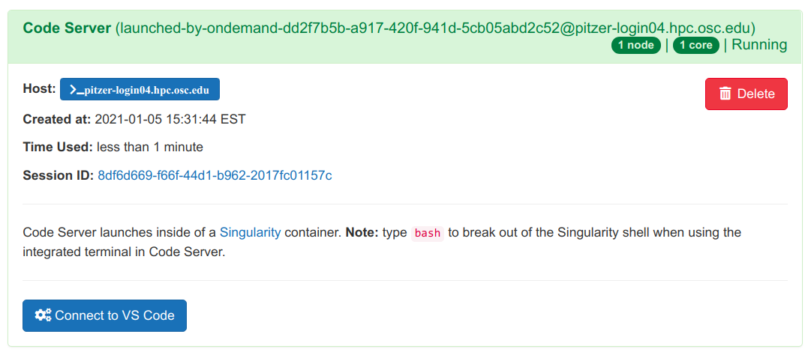
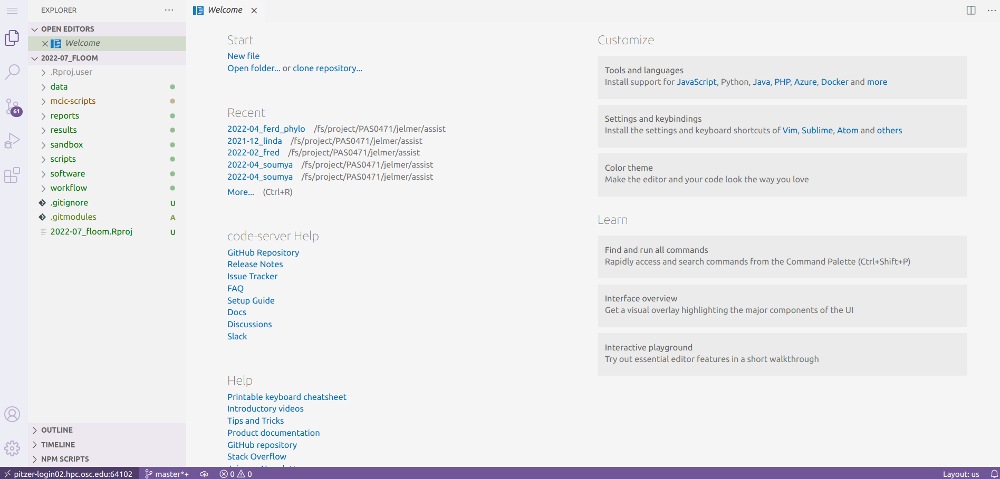
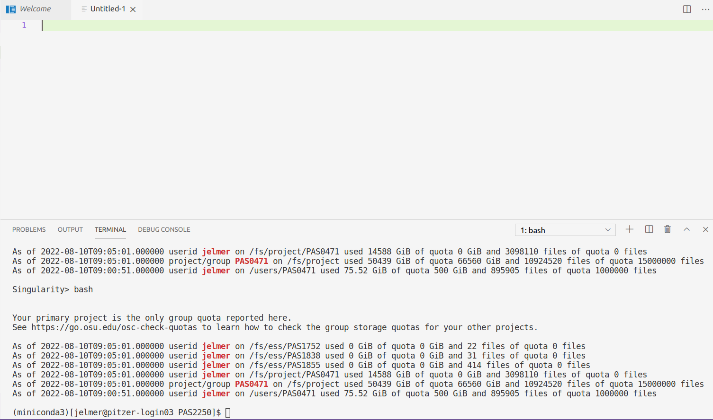

The VS Code Text Editor
PAGE STILL UNDER CONSTRUCTION
In this module, we will learn the basics of a fancy text editor called Visual Studio Code (VS Code for short). Conveniently, we can use a version of this editor (sometimes referred to as Code Server) in our browser via the OSC OnDemand website.
We will use VS Code throughout the workshop as practically a one-stop solution for our computing activities at OSC: accessing the Unix shell and writing scripts. This is also how I use this editor in my daily work.
To emphasize the additional functionality relative to basic text editors like Notepad and TextEdit, editors like VS Code are also referred to as “IDEs”: Integrated Development Environments. If you’ve ever worked with R, the RStudio program is another good example of an IDE.
1 Starting VS Code at OSC
Log in to OSC’s OnDemand portal at https://ondemand.osc.edu.
In the blue top bar, select
Interactive Appsand then near the bottom of the dropdown menu, clickCode Server.In the form that appears on a new page:
- Enter
3in the boxNumber of hours - Enter
/fs/ess/scratch/PAS2250in the boxWorking Directory - Click
Launch.
- Enter
On the next page, once the top bar of the box has turned green and says
Runnning, clickConnect to VS Code.
In the previous module, we’ve learned that all serious computation at OSC should be done not on login nodes but on compute nodes.
Starting an RStudio session, for instance, requires filling out a similar form, and RStudio will subsequently run on a compute node and your selected OSC project will be charged.
Running VS Code is a slightly peculiar case: we do have to fill out a form and reserve a pre-specified number of hours (the session will actually stop working after the allotted time has passed), but we’re on a login node and are not being charged.
2 Getting started with VS Code

2.1 Side bars
The narrow side bar on the far left has:
A (“hamburger menu” icon) in the top, which has most of the standard menu items that you often find in a top bar, like
File.A (cog wheel icon) in the bottom, through which you can mainly access settings.
A bunch of icons in the middle that serve to switch between different options for the wide side bar (to the right of the narrow side bar), which can show:
- Explorer: File browser (and, e.g., an outline for the active file)
- Search: To search recursively across all files in the active folder
- Source Control: To work with version control systems like
Git(not used in this workshop) - Run and Debug: For debugging your code (not used in this workshop)
- Extensions: To install extensions (we’ll install one later)
2.2 Editor pane and Welcome document
The main part of the VS Code is the editor pane. Whenever you open VS Code, a tab with a Welcome document is automatically opened. This provides some help for beginners, but also, for example, an overview of recently opened folders.
We can also use the Welcome document to open a new text file by clicking New file below Start (alternatively, click => File => New File). We’ll work with files starting tomorrow, but if you want, you could already start a file with notes on the workshop now.
Welcome document
If you’ve closed the Welcome document but want it back, click => Help => Welcome.
2.3 Terminal
By default, no terminal is open in VS Code – to do so, click the => Terminal => New Terminal.
In the terminal, the prompt says Singularity>. This is because in OSC OnDemand, VS Code runs inside a Singularity container (for our purposes, it is not important what that means, exactly). To break out of the Singularity shell and get a regular Bash Unix shell, type bash and press Enter.
In the next module, Mike will teach us how to use the terminal.

3 Some tips and tricks
3.1 Making use of your screen’s real estate
Since we are using VS Code inside a browser window, we are unfortunately losing some screen space. Make sure to maximize the browser window and if you have a bookmarks bar, try to hide it (for Chrome: Ctrl/⌘+Shift+B).
3.2 Resizing panes
You can resize panes (the terminal, editor, and wide sidebar) by hovering your cursor over the borders and then dragging it.
3.3 The Command Palette
To access all the menu options that are available in VS Code, the so-called “Command Palette” can be handy, especially if you know what you are looking for.
To access the Command Palette, click and then Command Palette or press F1 (or Ctrl/⌘+Shift+P).
For a quick test, open the Command Palette and start typing “color theme”, and you’ll see the relevant options pop up.
3.4 Color themes
To try out different color themes for the entire program, click and then Color Theme. (I like “Quiet Light”.)
4 Working directory
Setting a “working directory” means that you designate a folder on a computer as the starting point for your operations.
“Folder” and “directory” mean the same thing – the latter is most commonly used in the context of the Unix Shell.
VS Code has a concept of a working directory that is effective in all parts of the program: in the file explorer in the side bar, in the terminal, and when saving or opening files in the editor.
In this workshop, we’ll exclusively work within the folder /fs/ess/scratch/PAS2250 (you’ll make personal folders within there shortly). By opening this folder beforehand (we did this in the form on the OnDemand site), we make sure that VS Code always takes this folder as a starting point, which will make navigation and saving files much easier.
Additionally, when you reopen a folder later, VS Code will to some extent resume where you were before! It will reopen the text files that you had open and if you had an active terminal, it will also open a terminal. This is very convenient, especially when you start working on multiple projects (different folders) in VS Code and switch between those.
To switch to a different folder from within VS Code, click => File => Open Folder.
5 Addendum: keyboard shortcuts
Working with keyboard shortcuts (also called “keybindings”) for common operations can be a lot faster than using your mouse. Below are some useful ones for VS Code (for Mac, replace Ctrl by ⌘).
Toggle the wide side bar: Ctrl+B
Open a terminal: Ctrl+` or Ctrl+Shift+C.
Toggle between the terminal and the editor pane: Ctrl+` and Ctrl+1.
Line actions:
Ctrl+X / C will cut/copy the entire line where the cursor is, when nothing is selected (!)
Ctrl+Shift+K will delete a line
Alt+⬆/⬇ will move lines up or down.
Multiple cursors: Press & hold Ctrl+Shift, then ⬆/⬇ arrows to add cursors upwards or downwards.
Toggle line comment (“comment out” code, and removing those comment signs): Ctrl+/
Split the editor window vertically: Ctrl+\ (See also the options in
View=>Editor Layout)
Unfortunately, some VS Code and terminal keyboard shortcuts don’t work in this setting where we are using VS Code inside a browser, because existing browser keyboard shortcuts take precedence.
If you end up using VS Code a lot in your work, it is therefore worth switching to your own installation of the program (see At-home bonus: local installation)
6 At-home bonus: local installation
Another nice feature of VS Code is that it is freely available for all operating systems (and even though it is made by Microsoft, it is also open source).
Therefore, if you like the program, you can also install it on your own computer and do your local text editing / script writing in the same environment at OSC (it is also easy to install on OSU-managed computers, because it is available in the Self Service software installer).
Even better, the program can be “tunneled into” OSC, so that your working directory for the entire program can be at OSC rather than on your local computer. This gives the same experience as using VS Code through OSC OnDemand, except that you’re not working witin a browser window, which has some advantages (also: no need to fill out a form, or to break out of the Singularity shell).
For installation and SSH-tunneling setup, see this page - TBA.